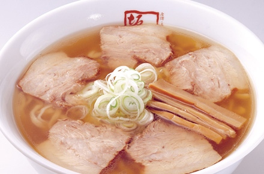
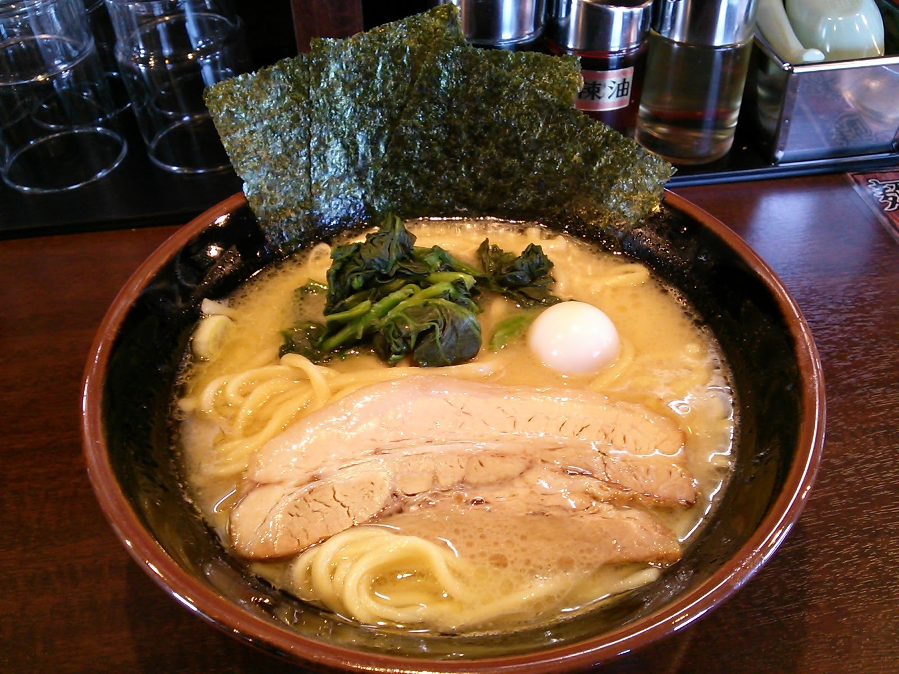
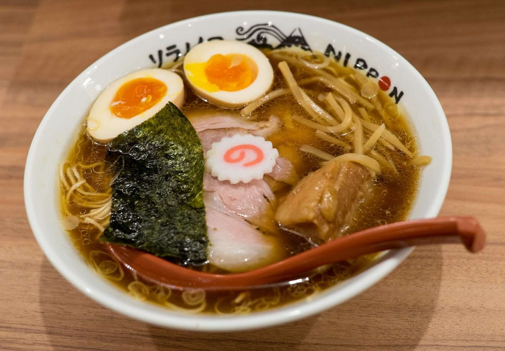
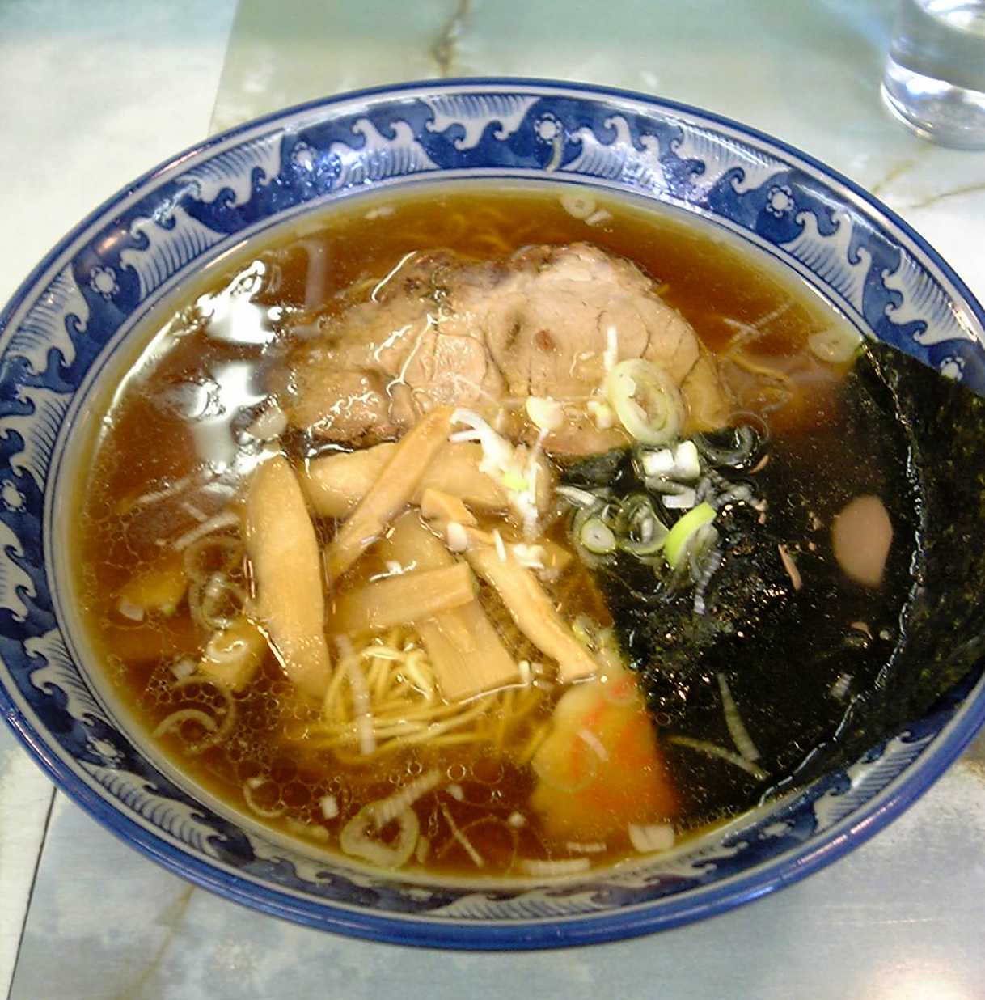
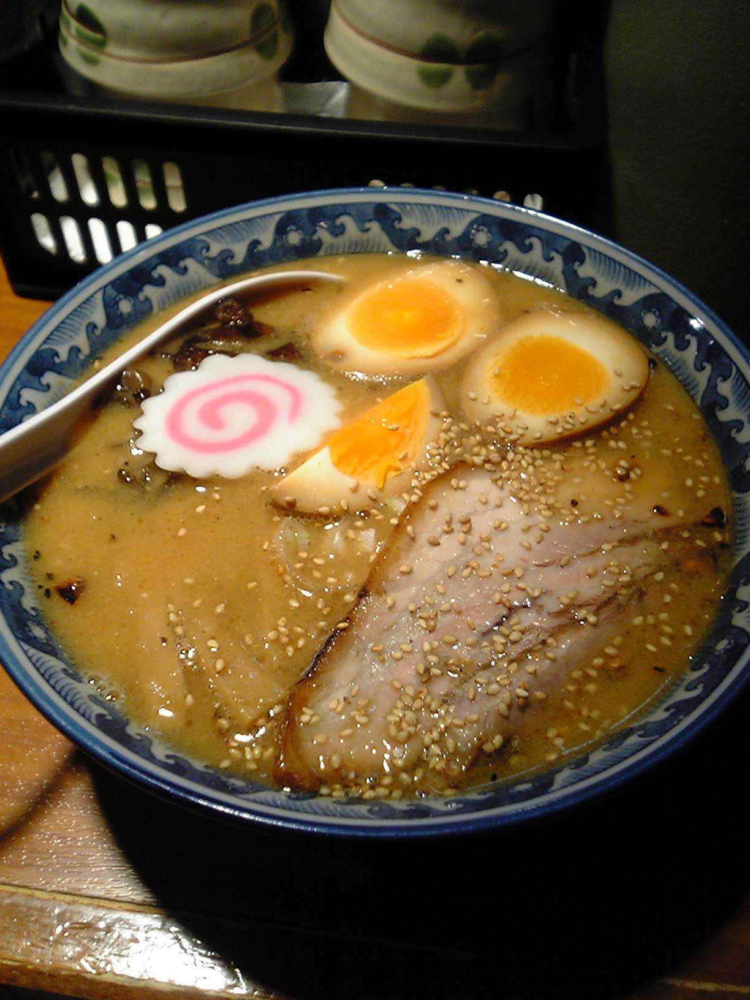
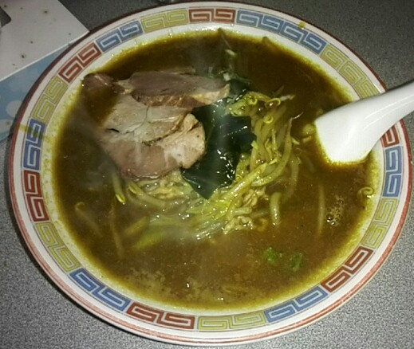

Rámen
Je tradičná japonská rezancová polievka pôvodom z Číny. Jej základnou surovinou sú dlhé rezance, ktoré sú zaliate silným vývarom. K tomu všetkému su do misky pridané ešte vajíčko na tvrdo, plátky bravčvého mäsa atď. (sušené huby, sójová omačka,nastrúhaná zelenina...). Poznáme 2 základné tipy tejto polievky a to je rámen Udon a Soba. Rámen Udon je z hrubších bielych rezancov, zatiaľ čo Soba je z tenších tmavých cestovín.
Každá z častí Japonska má svoj vlastný tip tejto vynikajúcej polievky. Až do roku 1950 sa rámen volal shina soba. Prvý obchod kde sa predával rámen otvorili v Yokohame v roku 1910
Rámen má veľmi výraznú chuť nazvanú umami, čo predstavuje lahodnú chuť "piateho druhu".
Existuje nespočetné množstvo polievok rámen, tu sú niektoré z nich

Sapporo rámen
Obľúbený a preslávený Miso rámen v hlavnom meste Hokkaida

Kitakata rámen
Rámen s plochými, hrubými a zároveň šmyklavými nudlami v meste Honshu

Yokohama rámen (le-kei)
Hrubšie nudle s bravčovým mäsom dochutené sójovou omáčkou

Tokio rámen
Tenké vlnité nudle s kuracím vývarom dochutený sójovou omáčkou
Rámen je tvorený z niektorých surovín, ktoré sme si vyššie pripomenuli, no tieto suroviny môžu mať rôzny tvar, veľkosť alebo aj chuť
Nudle
Väčšinou sa varia z pšenice,múky, vody a soli v slanej vode, taktieš známej ako kansui. Kansui je veľmi dôležitá ingrediencia, pochádzajúca zo stredného Mongolska, kde sa táto voda náchádza v jazerách. Kansui pridá nudliam nažltlú farbu a dodá im pevnosť. Niekedy sa namiesto kansui použije vajíčko, avšak takéto nudle sú náchylné na pohltenie vývaru, čo ich robí mäkšie.
Vývar
Zakladá si na bujónu z kuracieho alebo bravčvého mäsa, spolu s ďalšími ingredienciami ako sú kosti, cibuľa alebo aj morská riasa
Chuť
Delí sa do 4 základných kategórií
Shouyu
Príchuť, ktorá je zo všetkých štyroch najstaršia, má vývar hnedej farby z kuracieho (niekedy aj rybacieho alebo hovädzieho)
základu spolu so zeleninou do ktorého sa následné pridá sójová omáčka, ktorá dodá rámenu šťavnatosť a slanosť. Väčšinou má vlnité nudle, no nie je to podmienka. Pridávajú sa taktiež banbusové výhonky, cibuľa, morská riasa, uvarené vajíčko, fazuľové struky alebo čierne korenie spolu s kamaboko (špeciálne upravená ryba, pridáva sa na vrch rámenu a má podobu koláčika alebo sušienky)

Shio
Rámen je svetlý so slanou príchuťou žltej farby. Je doplnený kuraťom, zeleninou, rybou a morskou riasou. Niekedy sa používa aj špik z bravčových kostí, avšak žiadne vajíčko, to by totižto ovplivnilo farbu rámenu. Nudle sú zvyčajne rovnejšie.
Miso
Najmladší zo všetkých 4 rámenov pochádzajúci z Hokkaida. Vývar je tvorený z Misa (špeciálna zmes fermentovaných sójových zŕn spolu so soľou) spolu s kuriatkom alebo rybou. Vytvára jemne sladkú chuť a veľmi výborný rámen. Nudle sú hrubé, vlnité a tuhšie. Vďaka jeho chuti je k nemu dobrá väčšina dochucovadiel, ako napríklad: štiplavá fazuľová pasta, maslo s kukuricou, cibuľa, pór fauľové struky a tak ďalej

Curry
Bol vytvorený v Hokkaidu. Pozostáva zo špiku z bravčových kostí, zeleniny a kari. Má hrubé a vlnité nudle. Dochucuje sa grilovaným mäsom, fazuľovými strukmi a morskou riasou
